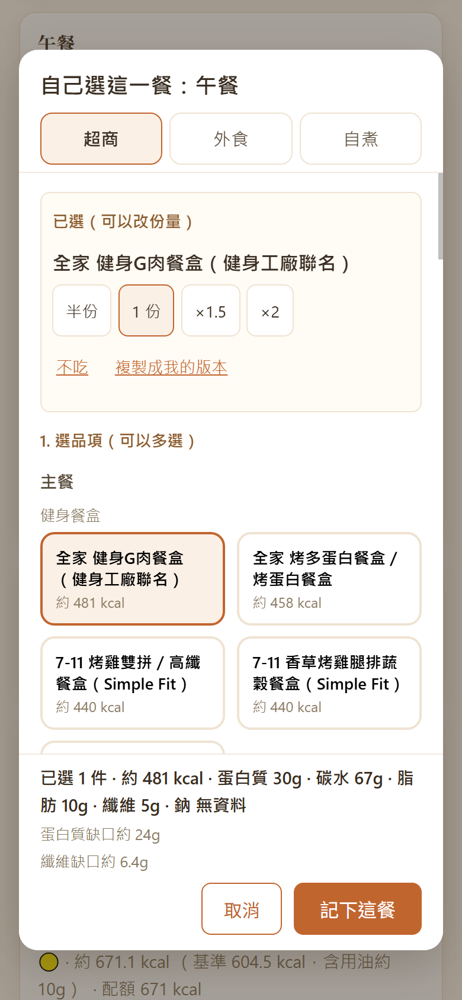
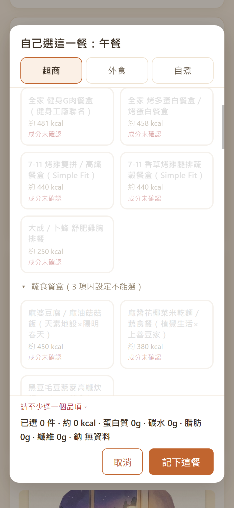
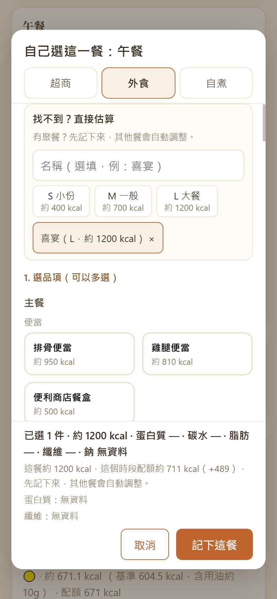
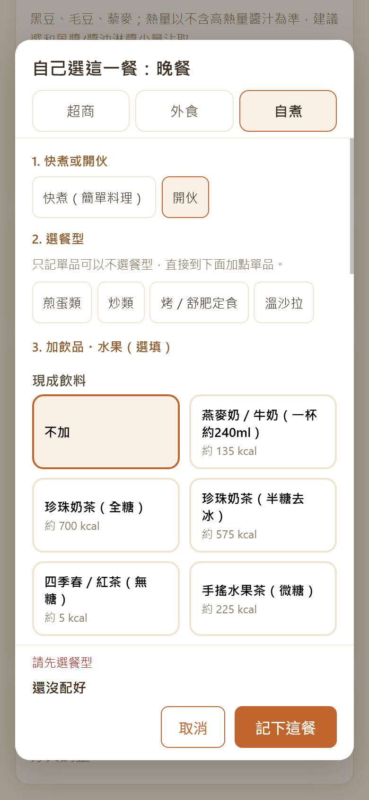
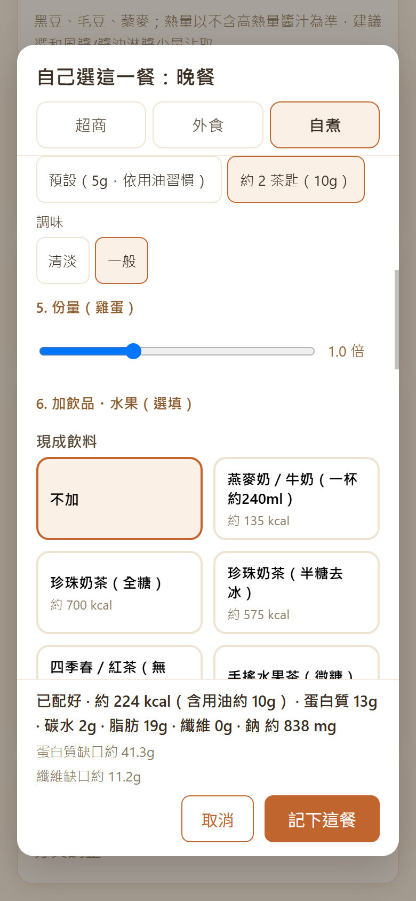
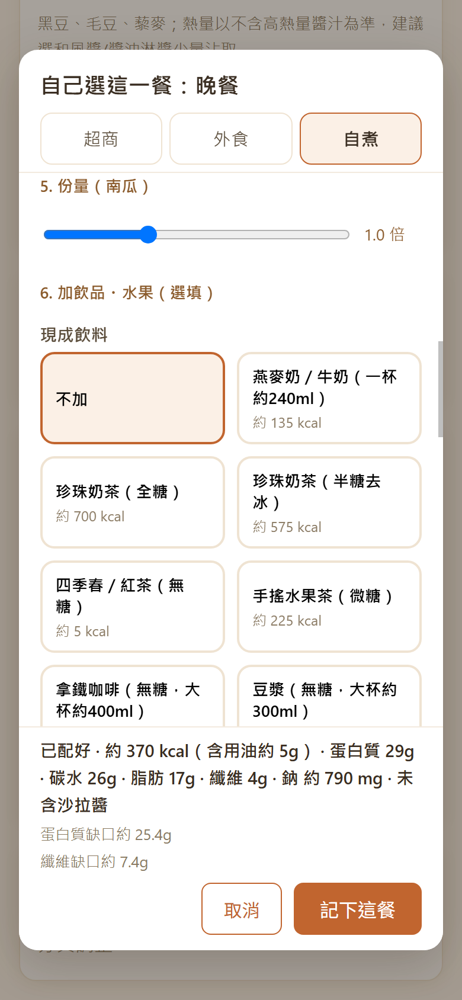
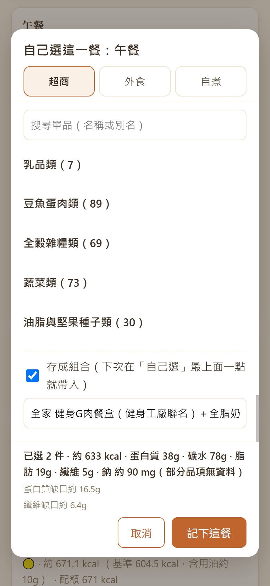
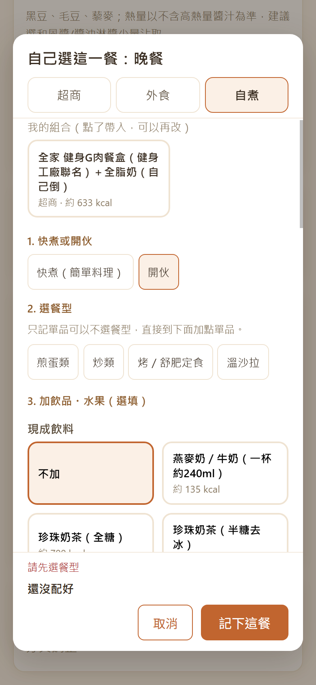
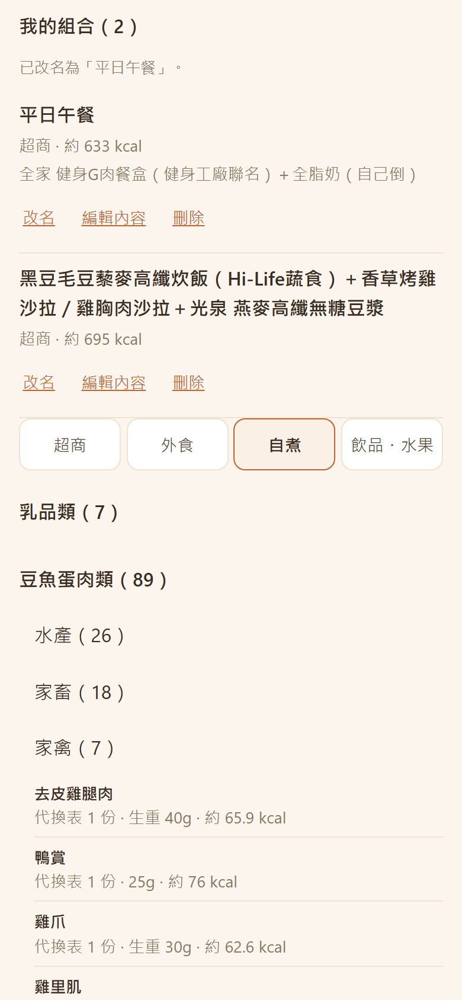

照 App 現在實際的樣子寫。按鈕與提示文字用「」括起來，跟畫面上的字一樣。分頁和 App 一樣，可以一邊開 App 一邊對照。
這份說明的分頁
上方有五個分頁：基本資料 今日建議 我的食物 本週總覽 運動紀錄。
第一次使用的順序：
先知道的幾件事
這一頁是做什麼的：告訴 App 你的身體數據、飲食限制和作息，它才算得出每天的熱量與營養目標，並決定建議與「自己選」裡哪些東西可以出現。
第一次填資料並算出目標：
改任何設定（飲食型態、過敏原、各時段來源…）：改完一定要再按一次「計算」。重新整理頁面後設定還在。
記體重：在「今日體重回填」選日期（預設今天）、填體重，按「送出」，下面會寫「已記錄 日期 體重 kg」。
算出目標後會出現這張卡，它根據你近幾週的體重變化，微調每日目標：
「資料備份」也在這一頁最下面，見〈資料備份〉。
資料只存在這台裝置的瀏覽器裡。換手機、清除瀏覽器資料、或想保險一點之前，先匯出備份。備份包含：基本資料、飲食紀錄、體重紀錄、運動紀錄、我的品項、我的組合，以及不吃清單、常吃清單、設定等。
建議用 Safari 或 Chrome 開；LINE 等 App 內建的瀏覽器常常下載失敗。如果看到「這份備份目前無法還原：…」，資料沒有損失，但這份檔案不要依賴，請告訴開發者。
選到不是備份的檔案（照片、文字檔）會顯示「這個檔案不能還原：…」，沒有「還原」按鈕。
上面這排：「建議卡」是今日建議頁本身；其餘對照「自己選」視窗：超商｜外食｜自煮是視窗最上面的三個分頁；「加飲品・單品」是三個分頁共用的兩個步驟；「底部與送出」是視窗最下面固定的摘要與按鈕；「我的組合」是最上面那一列與最下面的「存成組合」。
這一頁是做什麼的：看今天還剩多少熱量與營養可以吃，每個時段給一張建議卡；吃了就記下來。這是每天最常用的一頁。
還沒填基本資料時會寫「請先到「基本資料」分頁填寫並按「計算」後，再回來看今日建議。」
頁面最上面有一排七個日子：「今天」加未來 6 天（例如「週六 10/03」）。預設停在今天。有預約的日子，底下有一個小點。
點未來的日子，看到的跟今天不一樣：
點回「今天」就回到下面說的建議卡。
重新算一次今天的建議。切到別的分頁再切回來時，建議卡不會整批換掉；想換才按這個。
一張卡可能是下面幾種樣子：
想先排好明天或之後的某一餐（例如週六晚上聚餐）：
視窗裡會寫「預約不計算配額」，意思是排預約不會動到那一天的配額。排好的卡片可以按「改」或「取消預約」。
也可以預約「這餐不吃」，例如明天早上要空腹抽血。
今天每一餐的卡片下面有「這餐不吃」。按了會記成 0 大卡，卡片寫「這餐沒吃」，旁邊有「撤銷」。其他餐的配額會變多。
隔天打開「今日建議」，如果昨天有開著的時段沒有紀錄，最上面會出現一張收起來的卡片「昨天的餐（N 餐）」。按標題展開，每一餐一列。
想補更前面的日子，或想完整選品項，見〈本週總覽〉的「補記過去的一餐」。
照建議吃：按「記錄這餐」→ 卡片變成已記錄、上方數字更新。記錯了按「撤銷」。
不喜歡這個建議：按「倒讚」換一個；只是不想要其中某個食材，按「順便不要」下的那個標籤。
自己決定吃什麼：按「自己選」（下面整章在講）。
想把剛記的這一餐存起來以後一鍵再用：已記錄的卡片上按「存成組合」→ 名稱欄（預填品名，可以改）→「存」，寫「已存成組合「…」，在「自己選」最上面。」
在「今日建議」任何一個時段卡上按「自己選」，會跳出一個視窗「自己選這一餐：午餐」（時段名稱依你按的那張卡）。你可以從超商、外食、自煮三種來源挑，再補上飲品、水果或單品，最後按「記下這餐」。
整個視窗的結構
步驟編號是連續的：超商與外食是「1. 選品項」「2. 加飲品・水果（選填）」「3. 加點單品（選填）」；自煮的編號在後面〈自煮分頁〉說明。
打開時停在哪個分頁，依序看：
預設值是早餐、午餐停在超商，晚餐停在自煮的「開伙」。想換預設，到基本資料改該時段的來源再按「計算」。

超商分頁的做法，外食分頁也一樣（品項怎麼分組、灰色原因、份量晶片、數量上限、新增品項都相同）。外食多了「自助餐」和「找不到？直接估算」，在「外食」子分頁。
可以多選，但每個角色有上限，見〈每個角色最多選幾個〉。選了之後，這個品項會出現在清單最上面的「已選（可以改份量）」段。
被你的設定擋住的品項會灰掉、不能點，卡片上寫原因：

被過敏原或飲食限制擋住的常吃品項留在「常吃」組，灰在組的最後；選了的常吃品項還是選著，只是排在常吃組裡。常吃只影響「自己選」的排列。
標了不吃的內建品項不會留在原位，而是移到分頁最下面收起來的「你標了不吃（N）」。裡面的卡片灰掉不能點，旁邊有「取消不吃」，按了就回原位、可以選。
把自己常吃的東西標起來，「自己選」會把它們放在最上面一組「常吃」，不用每次翻分類。數量不限。常吃只影響自己選的排列，今日建議的推薦不受影響。標法見下一段；也可以到「我的食物」標（見〈我的食物〉）。
選了超商或外食的品項後，清單上方「已選（可以改份量）」每個品項一行：
現成飲料選中後，它的份量晶片出現在「加飲品・水果」步驟裡、那一杯的下面，用法一樣。（單品不用晶片，用步進器，見〈加點單品〉。）
為了避免記出不合理的一餐，每個角色（品項右上的分類：主餐、配菜、點心、飲料）有數量上限，只算目前這個分頁選的東西和那一杯現成飲料：
| 角色 | 最多 |
|---|---|
| 主餐 | 早餐、午餐、晚餐各 2 個（例如雞胸＋蒸地瓜）；下午茶、宵夜 1 個 |
| 配菜 | 1 個 |
| 點心 | 1 個 |
| 飲料（現成飲料） | 1 杯 |
清單裡沒有你吃的東西，又想記得準一點：在超商或外食分頁最下面按「＋新增到我的超商品項」（外食分頁則是「…外食品項」）。新增在哪一個分頁，就屬於那個分頁的來源。
你新增的品項如果過敏原是「未確認」，而你之後勾了過敏原，它會灰掉、寫「成分未確認」，旁邊多一個「補填」按鈕：
寫了「含過敏原」的品項沒有「補填」——它本來就含你要避開的東西。只有「成分未確認」「飲食限制未確認」這類可以補。
外食分頁跟超商分頁的操作一樣：品項分組、灰色原因、「你標了不吃」、份量晶片與「不吃」「複製成我的版本」、每個角色的數量上限、「＋新增到我的外食品項」與「補填」都請看「超商」子分頁。差別是：清單內容換成台式外食（便當、麵食…，在前）和連鎖健康餐盒（在後），並且最上方多了「自助餐」和「找不到？直接估算」兩張卡。
「外食」分頁最上面有兩張卡：「自助餐」和「找不到？直接估算」。下面先說「自助餐」。
用在自助餐、吃到飽、朋友家這類沒有品項可選的一餐。記的是你自己吃的那一份。按標題「自助餐」展開，依序選：
用在聚餐、喜宴、或清單裡找不到的外食，只選大小（S／M／L）：

用食材自己組一餐：先選難度、選「餐型」，再依序選食材、烹調法、用油、份量。選項會即時灰掉不合適的，並寫原因。

餐型是一餐的架構，列出的餐型看這個時段：
| 餐型 | 可以出現的時段 |
|---|---|
| 早餐碗 | 早餐、下午茶、宵夜 |
| 煎蛋類 | 早餐、午餐、晚餐、宵夜 |
| 炒類 | 午餐、晚餐 |
| 烤／舒肥定食 | 午餐、晚餐 |
| 溫沙拉 | 午餐、晚餐 |
| 蒸魚定食 | 午餐、晚餐 |
| 滷燉定食 | 午餐、晚餐 |
| 低碳蛋白質蔬菜盤 | 午餐、晚餐 |
「選餐型」那一排最後多一個「共餐」。家裡煮了幾道菜一起吃，記你自己吃的那一份。
按「共餐」後，出現「選家常菜」這一步，依序是：
選了餐型後出現「3. 選食材與烹調法」，分成幾個軸（這個餐型沒有的軸就不出現）：
| 軸 | 規則 |
|---|---|
| 蛋白質 | 必選，最多 2 個 |
| 主食 | 必選，選 1 個（煎蛋類沒有主食這一軸） |
| 蔬菜 | 選填，最多 3 個（早餐碗沒有蔬菜這一軸） |
| 醬料 | 選填，選 1 個，另有「不加」（只有部分餐型有） |
| 烹調法 | 必選，選 1 個 |
只有需要的時候才出現這一步：烹調法有用油（煎、炒），或這個餐型有調味（除了早餐碗以外都有）。


視窗最下面固定三塊，會隨你每次選取更新：
有這一行時「記下這餐」是淡色按不下去，寫的就是原因。例如「請至少選一個品項。」「請先選餐型」「請選蛋白質」「請選主食」「請選烹調法」「快煮不含「烤／氣炸」，請換成開伙或換掉它。」「單品最多選 4 項。」。排掉原因後這行就消失、按鈕可以按。
常吃的一餐（例如「平日午餐：健身餐盒＋全脂奶」）存成組合，下次在「自己選」最上面點一下，就把整餐帶進來，不用重選。組合只存「選了哪些東西、份量多少」；熱量與營養每次都用目前的資料重算。今日建議的推薦不會用到組合。
入口 1：記的時候順便存

入口 2：記完之後在今日建議存
這個入口一律不保留用油與調味；只有今天的紀錄才有這個按鈕；含「直接估算」的紀錄沒有。

帶入時，組合裡的項目如果現在不能用，卡片會寫「有 N 項目前不能用：原因」，帶入時不會預選那幾項，並在上方說明原因，其他項目照常帶入。原因可能是：你勾了過敏原、你標了不吃、已經不提供（下架）、這個時段的主餐已經超過上限（例如午餐 2 個，下午茶只能 1 個）、單品超過 4 項。整個組合都不能用，卡片就灰掉不能點。
特別的情況：如果組合裡的內建品項後來被你「複製成我的版本」，組合會自動改用你的版本。
「我的食物」搜尋框下方有一行收著的「我的組合（N）」，點開：

這一頁是做什麼的：把 App 內建的食物和你自己新增的都攤開，讓你看營養與出處、標「常吃」「不吃」、複製成自己的版本、管理自己新增的品項與組合。這裡不記錄飲食，記錄在「今日建議」。
還沒填基本資料時也能瀏覽、點開明細；只是「常吃」「不吃」是淡色的，旁邊寫「先在基本資料填好身體數據並按計算，才能標「常吃」「不吃」。」
搜尋框下面那一行收著的「我的組合（N）」，點開可以改名、編輯內容、刪除與復原。完整說明在「今日建議」分頁的 「自己選」→ 我的組合。
內建品項，分法跟「自己選」一樣（主餐／配菜／點心，再依分類）。每一列：名稱、「約 N kcal」（外食如果是用區間的中間值，後面會寫「（區間 a–b kcal）」）。被過敏原或飲食設定擋住的灰掉，並寫原因。
最上面是「常吃（N）」（不收合，沒有就不出現），見下面〈標「常吃」〉。往下依序是：「我的品項（N）」（你新增的，最新的在前）、「你標了不吃」、「已換成我的版本」、「已刪除」。有東西才顯示該組，都收著。最下面有「＋新增到我的超商品項」（或外食）。
外食子分頁和超商一樣的做法，內容換成外食品項（外食還有連鎖健康餐盒）：
內建品項，分法跟「自己選」一樣（主餐／配菜／點心，再依分類）。每一列：名稱、「約 N kcal」（外食如果是用區間的中間值，後面會寫「（區間 a–b kcal）」）。被過敏原或飲食設定擋住的灰掉，並寫原因。
最上面是「常吃（N）」（不收合，沒有就不出現），見下面〈標「常吃」〉。往下依序是：「我的品項（N）」（你新增的，最新的在前）、「你標了不吃」、「已換成我的版本」、「已刪除」。有東西才顯示該組，都收著。最下面有「＋新增到我的超商品項」（或外食）。
最上面是「常吃（N）」（不收合，沒有就不出現）。接著是食物代換表裡的食材（水果除外，水果在「飲品・水果」）：乳品類、豆魚蛋肉類、全穀雜糧類、蔬菜類、油脂與堅果種子類，標題後面有筆數，都收著；點開大類裡面還有子類（「筍與莖菜」標「本 App 自己的分組」），也收著，再點開才是品項。 每一列：名稱、「代換表 1 份 · 生重 30g · 約 N kcal」（對不到代換表的內建食材寫「內建一餐 · 熟重 150g」）。打開過的類別，切子分頁、搜尋再清空後會維持打開。這個子分頁沒有「我的品項」；要加食材見下面〈＋新增食材〉。
子分頁最上面有「＋新增食材」。衛福部資料裡，代換表沒用到的 1887 筆可以加進來；代換表已經有的不在這裡。找不到的可以「自己填」。
加入後放在哪裡：
衛福部的食材：過敏原與素食照衛福部標註，不能改。生熟跟著樣品，生的要秤煮之前的重量。可以改名稱、一份幾克和備註。按「不吃」就是從我的食材移除，上方有「復原」，也可以再從「＋新增食材」加回來。用到它的組合會顯示已不提供，加回來就恢復。
自填的食材：照包裝填每 100g，或每一份加上一份幾克；液體用毫升。過敏原預設未確認。按「刪除」後，在「已刪除的食材」可以還原。
最上面是「常吃（N）」（不收合，沒有就不出現）。依序：「現成飲料」→「家裡的飲品」→「水果」（收著）→「我的品項」→「你標了不吃」→「已換成我的版本」→「已刪除」。這裡新增的品項角色預設是「飲料」。從「＋新增食材」加的液體（衛福部的飲品、牛奶、豆漿）會出現在這裡的「我的食材」組。
下面這幾段，在上面任何一個子分頁都一樣。
點一列展開明細，再點一次收起來；一次只開一筆，被擋的也可以點開看原因。明細內容：
這一頁是做什麼的：看這一週整體吃得怎麼樣。刻意只給「週平均有沒有在目標內」的中性說明，不逐天打分數。
什麼叫「完整記錄日」
週平均只算「完整記錄的日子」：當天所有開啟的時段都有記錄才算，而且今天不算（今天還沒過完）。還沒有這樣的日子時，摘要寫「本週還沒有完整記錄的日子（當天所有開啟時段都有記錄才算，今天不算）」。
蛋白質、纖維的平均只算「有這項資料」的完整記錄日；有些日子因為品項沒有資料沒算進去時，後面會註明，例如「（4 天有資料）」。整週都沒有資料寫「—（完整記錄日的紀錄都沒有這項資料）」。吃了熱量只知道、沒有纖維資料的東西（例如部分加工肉品），就會這樣。
在「每日紀錄」上面有「補記過去的一餐」。想把過去某一餐補上去，不是昨天的話，用這裡。最多回推 7 天，不含今天（今天的請到「今日建議」）。
這一頁是做什麼的：記你做了什麼運動、多久、強不強。只記項目、時長、強度，不換算熱量，也不影響今日建議的飲食熱量；整頁看不到任何飲食數字。
目前歷史紀錄上沒有編輯或刪除的按鈕。
這份說明跟著 App 目前的版本寫。如果畫面上的字和這裡不一樣，以畫面為準，並請告訴開發者更新這份說明。